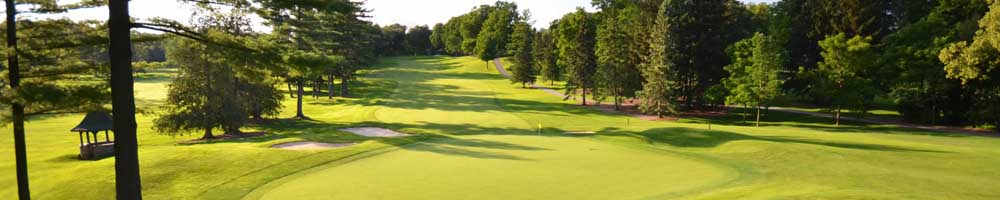

-
Etobicoke St. George Golf Club

St. George’s Golf and Country Club is ranked No. 30 of the World's 100 Greatest Golf Courses in 2014, No. 10 in the world outside the United States and No. 1 in Canada by Golf Digest magazine. St. George's was also ranked No. 1 by Golfweek magazines in 2012 and one of the 100 Platinum Clubs of the World in 2013. Recently the course was ranked in the top 100 courses in the world by Golf Magazine and Golf Course Architecture. Designed by legendary Canadian golf course architect Stanley Thompson in 1929 the course has truly stood the test of time. It continues to receive much praise for its traditional design and most notably its four outstanding finishing holes, according to PGA Tour players, while hosting the 2010 RBC Canadian Open.
-
Hamilton Golf & Country Club

With 18 holes designed by Harry Shapland Colt, the iconic British designer noted for creating many of the best golf courses in the world, and another nine created by famed Canadian architect Robbie Robinson, Hamilton has been long considered among the best in Canada, and currently is in Golf Digest's Top 100 courses in the world. With a historic and updated clubhouse, world-class practice facilities and a short course modeled on Colt's best designs, Hamilton offers a private golf club experience with few rivals.
-
Kitchener West Mount Golf Club

Westmount Golf and Country Club opened its greens to members in the summer of 1931. It is one of Canada’s premier golf facilities, consistently ranking in the top 15 over the last several years. It ranked #12 on the SCOREGolf Top 100 Courses in Canada - 2014.
Designed by renowned golf course architect, Stanley Thompson, Westmount boasts a beautifully maintained, championship level 18-hole golf course complete with a fully stocked and operational pro shop, electric golf carts, caddies and a friendly, professional staff.
-
Woodbridge Golf and Country Club

Established in 1924 hidden among the grape vineyards and cherry orchards of the San Joaquin Valley, Woodbridge Golf & Country Club features a 27-hole champion golf course, a modern clubhouse with casual and formal dining, a tennis facility with 7 tennis courts, and a full size swimming pool. Our main goal is to provide a memorable private club experience for our members and their guests.
-
Wyndance Golf Club
Wyndance Golf Club in Uxbridge, Ontario, holds the distinction of being the first course in Canada designed by the legendary Greg Norman. Norman, a member of the World Golf Hall of Fame, crafted a masterful routing through and around a former sand and gravel pit to create a breathtaking masterpiece. As a result, Wyndance Golf Club was named runner-up by Golf Digest as best new course in Canada in 2008.
Glen Abbey Golf Course
Glen Abbey Golf Course is located in Oakville, Ontario. Designed by Jack Nicklaus in 1976, it is one of Canada's most famous golf courses and is home to the Royal Canadian Golf Association and the Canadian Golf Hall of Fame.
Glen Abbey Golf Club, which welcomes the public golfer and ClubLink Members alike, has been a grand stage for golf history since opening more than 30 years ago. The world-famous property is also home to the Academies of ClubLink, the headquarters of Golf Canada, the Canadian Golf Museum and Hall of Fame, and the TaylorMade Performance Lab.
Thundering Waters
Thundering Waters is John Daly’s first “Signature” golf course in Canada. The golf course features the high risk-reward style of John Daly to enhance the excitement for players of all skill levels.
Angus Glen Golf Club
Golf at the Angus Glen Golf Club offers beauty, challenge, first-class service and maybe best of all, variety.
Angus Glen Golf Club is a public golf course and is known internationally for hosting PGA Tour events on both of its championship golf courses. Each time you choose to play Angus Glen, you are walking the same fairways that the world’s best golfers have competed on.
The South Course hosted the 2002 Canadian Open, when John Rollins defeated Justin Leonard and Neal Lancaster in an exciting sudden death playoff. Capturing the title for the second consecutive year Jim Furyk out duelled Vijay Singh on the North Course to win the 2007 Canadian Open. With two different challenges waiting, Angus Glen will provide a memorable day of play for all!